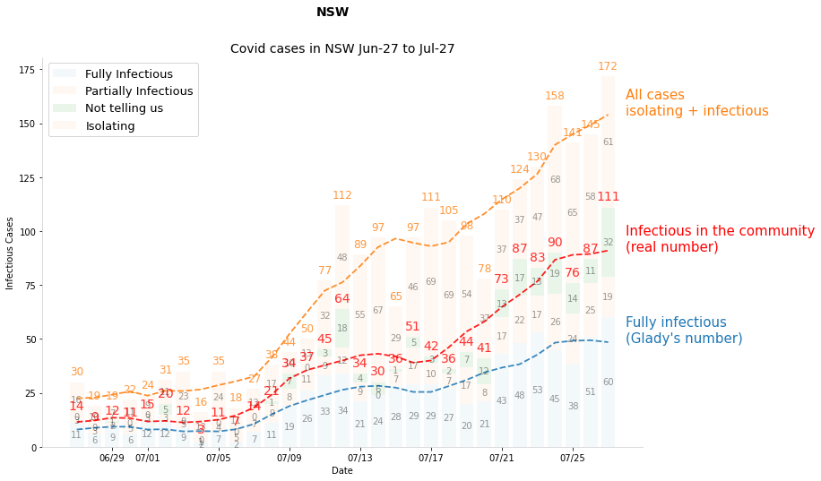
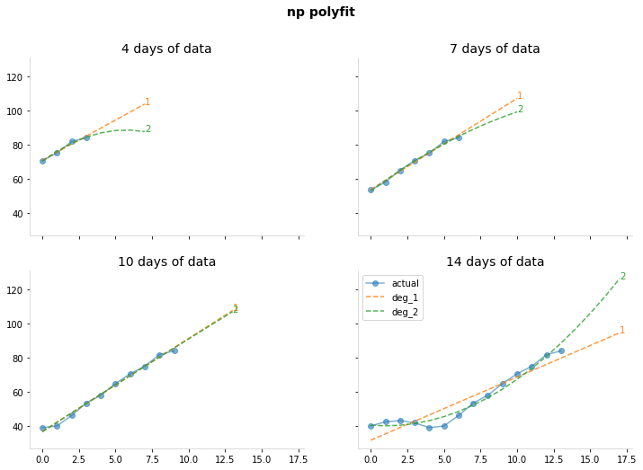

Covid in NSW, 2021 edition
work in progress, just wanted to see the nsw covid numbers all in one graph.
import datetime
# viz stuff
import matplotlib.dates as mdates
import matplotlib.pyplot as plt
import numpy as np
import pandas as pd
from matplotlib.dates import DateFormatter
from numpy.polynomial import Polynomial
# import plotly.express as px
# import plotly.graph_objects as go
NSW data
https://data.nsw.gov.au/nsw-covid-19-data
Total covid cases
Modify this to start from first date.
covidlive gives the total local cases - the net column is the local cases only.
def get_total_cases(start_date: str="27 June 2021"):
"""gets total local cases"""
start_date = pd.to_datetime(start_date, dayfirst=True)
df = pd.read_html("https://covidlive.com.au/report/daily-source-overseas/nsw")[1]
df.columns = df.columns.str.title() # hate caps
df["Date"] = pd.to_datetime(df["Date"], dayfirst=True) # need dates
df = df.query("Date >= @start_date") # only want dates for current spread
df = df.sort_values(by="Date", ignore_index=True) # sorted properly
df = df[["Date", "Net", "Net2"]]
df = df.rename(columns={"Net": "Local_cases", "Net2": "Overseas_cases"})
return df
df_total = get_total_cases()
print(df_total.shape)
df_total.tail(3)
(31, 3)
| Date | Local_cases | Overseas_cases | |
|---|---|---|---|
| 28 | 2021-07-25 | 141 | 0 |
| 29 | 2021-07-26 | 145 | 6 |
| 30 | 2021-07-27 | 172 | 3 |
Wild Cases
from datetime import datetime
def get_wild_cases():
"""returns df of infectious cases in the community"""
try:
df = pd.read_html("https://covidlive.com.au/report/daily-wild-cases/nsw")[1]
except:
print(f"something went wrong trying to access the data")
return False
df.columns = df.columns.str.title() # hate caps
df["Date"] = pd.to_datetime(df["Date"], dayfirst=True) # need dates
df = df.sort_values(by="Date", ignore_index=True) # sorted properly
row = df.iloc[-1]
if any(row[["Full", "Part", "Unkn"]] == "-"):
print(f"{row.Date:%d %b} is being updated")
return df
df_wild = get_wild_cases()
print(df_wild.shape)
df_wild.tail(3)
(31, 6)
| Date | Full | Part | Unkn | Total | Iso | |
|---|---|---|---|---|---|---|
| 28 | 2021-07-25 | 38 | 24 | 14 | 76 | 46% |
| 29 | 2021-07-26 | 51 | 25 | 11 | 87 | 40% |
| 30 | 2021-07-27 | 60 | 19 | 32 | 111 | 35% |
Final data
This is the dataset I'm using to make graphs prediction etc.
For smoothing, see this.
def get_data():
"""returns cleaned and joined data"""
df_wild = get_wild_cases()
df_total = get_total_cases()
assert df_wild.shape[0] == df_total.shape[0]
df = pd.merge(df_wild, df_total, on=["Date"])
df["Isolating"] = df.Local_cases - df.Total
# some stats
for col in ["Full", "Part", "Unkn", "Total", "Isolating", "Local_cases"]:
# exponential weighted avg
df[f"{col}_ewa"] = df[col].ewm(span=7, adjust=False).mean()
# rolling mean, though ideally add some forward prediction
df[f"{col}_roll"] = df[col].rolling(7, center=True, min_periods=4).mean()
return df
df = get_data()
print(df.shape)
df.tail(3)
(31, 21)
| Date | Full | Part | Unkn | Total | Iso | Local_cases | Overseas_cases | Isolating | Full_ewa | ... | Part_ewa | Part_roll | Unkn_ewa | Unkn_roll | Total_ewa | Total_roll | Isolating_ewa | Isolating_roll | Local_cases_ewa | Local_cases_roll | |
|---|---|---|---|---|---|---|---|---|---|---|---|---|---|---|---|---|---|---|---|---|---|
| 28 | 2021-07-25 | 38 | 24 | 14 | 76 | 46% | 141 | 0 | 65 | 39.515698 | ... | 19.344065 | 22.166667 | 13.221584 | 17.666667 | 72.081347 | 89.0 | 54.090697 | 56.0 | 126.172044 | 145.0 |
| 29 | 2021-07-26 | 51 | 25 | 11 | 87 | 40% | 145 | 6 | 58 | 42.386773 | ... | 20.758049 | 22.200000 | 12.666188 | 17.800000 | 75.811010 | 89.4 | 55.068022 | 59.8 | 130.879033 | 149.2 |
| 30 | 2021-07-27 | 60 | 19 | 32 | 111 | 35% | 172 | 3 | 61 | 46.790080 | ... | 20.318537 | 23.500000 | 17.499641 | 19.000000 | 84.608258 | 91.0 | 56.551017 | 63.0 | 141.159275 | 154.0 |
3 rows × 21 columns
Graphs
First up, to eyeball what is happening
def get_label(col):
if "_roll" in col:
col = col.split("_roll")[0]
labels = {
"Full": "Fully infectious\n(Glady's number)",
"Part": "Partly infections WTF",
"Unkn": "Unknown, or we don't know",
"Total": "Infectious in the community\n(real number)",
"Local_cases": "All cases\nisolating + infectious",
"Isolating": "iso All cases, isolating + infectious"
}
return labels[col]
fig, ax = plt.subplots(figsize=(12, 8))
fig.suptitle("NSW")
ax.set_title(
f"Covid cases in NSW {df.Date.min():%b-%d} to {df.Date.max():%b-%d}",
fontsize=14)
ax.set_ylabel("Infectious Cases")
ax.set_xlabel("Date")
X = df.Date
colors = {}
# draw smoothed lines
cols=["Local_cases", "Total", "Full"]
for i, col in enumerate(cols[::-1]):
Y = df[col]
Y_roll = df[f"{col}_roll"]
bottom = None if (i-1)<0 else df[cols[i-1]]
# draw line
line = ax.plot(X, Y_roll,
lw=1.8, linestyle="--", alpha=0.88,
color = "red" if col == "Total" else None)
color = line[0].get_color()
colors[col] = color
# label line at its end
xy = X.iloc[-1] + pd.DateOffset(days=1), Y_roll.values[-1]
ax.annotate(get_label(col), xy=xy, fontsize=15,
color=color)
# step
#ax.step(df.Date, df.Total, "o--", alpha=0.35, color=colors["Total"])
# stacked bar chart
alpha=0.05
full = ax.bar(df.Date, df.Full, label="Fully Infectious", alpha=alpha)
part = ax.bar(df.Date, df.Part, bottom=df.Full, label="Partially Infectious", alpha=alpha)
unkn = ax.bar(df.Date, df.Unkn, bottom=df.Full + df.Part, label="Not telling us", alpha=0.1)
isolating = ax.bar(df.Date, df.Isolating, bottom=df.Total, label="Isolating",
color=colors["Local_cases"], alpha=alpha) # only drawing for labels
for rect in [full, part, unkn, isolating]: # label the bars in the center
ax.bar_label(rect, label_type='center', alpha=0.4)
# label totals by making a invisible total bar
r = ax.bar(df.Date, df.Total, alpha=0) # only drawing for labels
ax.bar_label(r, alpha=0.8, padding=5, fontsize=14, color=colors["Total"])
ax.bar_label(isolating, alpha=0.8, padding=5, fontsize=12, color=colors["Local_cases"])
# final plot tweaks
date_form = mdates.DateFormatter("%m/%d")
ax.xaxis.set_major_formatter(date_form)
ax.legend(loc="upper left", fontsize=13)
plt.show()

Extrapolation
Now to use a simple fit to extend cases out 5 days.
from numpy.polynomial import Polynomial
from scipy.optimize import curve_fit
from sklearn import linear_model
DEG = 2
DAYS = 10
FORECAST = 5 # num of days to look ahead
fig, axs = plt.subplots(2,2, figsize=(12,8), sharex=True, sharey=True)
fig.suptitle("np polyfit")
for ax, DAYS in zip(axs.flat, [4, 7, 10, 14]):
y = df.tail(DAYS).Total_roll.values
x = np.arange(len(y))
xx = np.arange(max(x)+FORECAST)
ax.set_title(f"{DAYS} days of data")
ax.plot(x, y, "o-", label="actual", alpha=0.58)
for DEG in [1,2]:
p = Polynomial.fit(x, y, DEG)
line = ax.plot(xx, p(xx), "--", label=f"deg_{DEG}", alpha=0.8
)
ax.annotate(f"{DEG}", xy=(xx[-1], p(xx)[-1]),
color=line[0].get_color())
ax.legend();

DEG = 2
DAYS = 10
FORECAST = 5 # num of days to look ahead
y = y = df.tail(DAYS).Total_roll.values
x = np.arange(len(y))
xx = np.arange(max(x), max(x)+FORECAST)
p = Polynomial.fit(x, y, DEG)
plt.plot(x, y, "o-", label = "actual")
plt.plot(xx, p(xx), "o-", label="forecast")
plt.legend();

A simple R calculation
def get_R(col:str = "Total_roll", T=5):
"""col: column to look at
T: doubling time"""
DEG = 2
DAYS = 10
FORECAST = 5 # num of days to look ahead
y = y = df.tail(DAYS).Local_cases_roll.values
x = np.arange(len(y))
xx = np.arange(max(x), max(x)+FORECAST)
p = Polynomial.fit(x, y, DEG)
cases = np.concatenate((df[col].values, p(xx)))
r = (cases[T:] / cases[:-T])
R = r[-1]
print(f"R estimate: {R:.2f}")
fig, (ax, ax1) = plt.subplots(1,2, figsize=(12,6))
ax.plot(r)
ax1.plot(x, y, "o-", label = "actual")
ax1.plot(xx, p(xx), "o-", label="forecast")
ax1.legend()
plt.show()
return R
get_R("Local_cases_roll")
R estimate: 1.26

1.2580412233938458
def predict(col="Total_roll"):
start_date = df.Date.iloc[-1]
end_date = start_date + pd.DateOffset(days=15)
#end_date = pd.to_datetime("15 December 2021", dayfirst=True)
x_future = pd.date_range(start_date, end_date, freq=pd.DateOffset(days=1))
c = df[col].values[-1]
y_pred = [c * (R**(t/T)) for t in np.arange(1, len(x_future)+1)]
y_pred[0] = df[col].values[-1] # to make the plot pretty
y_high = [c * (R*1.2)**(t/T) for t in np.arange(1, len(x_future)+1)]
y_low = [c * (R*0.80)**(t/T) for t in np.arange(1, len(x_future)+1)]
print(col, len(x_future), len(y_low), len(y_pred), len(y_high))
return y_low, y, y_high
_ = predict("Total_roll")
Total_roll 16 16 16 16
fig, ax = plt.subplots(figsize=(12, 6))
fig.suptitle(
f"R against total cases {df.Date.min():%b-%d} to {df.Date.max():%b-%d}")
ax.set_title(
f"left axis: cases right axis: R value")
ax2.set_ylabel("Infectious Cases")
ax.set_xlabel("Date")
ax.axis(xmin=min(df.Date), xmax=max(x_future))
# plot R on first axis
ax.set_ylim([0,6])
ax.set_ylabel("Reff")
ax.fill_between(df.Date, r, np.zeros_like(r), label="R", alpha=0.07)
ax.legend()
# plot cases on right y axis
ax2 = ax.twinx()
ax2.set_yscale("log")
ax2.set_ylabel("Infectious Cases")
act = ax2.step(df.Date, df.Total, alpha=0.16, color="red", label="Infectious cases")
# smoothing lines
ax2.plot(df.Date, df.Total_roll, label="Infectious cases smoothed",
linewidth=1.5, linestyle="-", color="red", alpha=0.5)
# projection
for col in ["Total_roll", "Local_cases_roll"]:
x_future = pd.date_range(start_date, end_date, freq=pd.DateOffset(days=1))
print(len(x_future))
y_low, y_pred, y_high = predict(col)
print(len(x_future), len(y_low), len(y_pred), len(y_high))
#ax2.plot(x_future, y_pred, "--", color="red", label=f"{col} projection")
ax2.plot(x_future, y_low, "--", alpha = 0.1)
ax2.plot(x_future, y_high, "--", alpha = 0.1)
ax2.fill_between(x_future, y_pred_plus, y_pred_minus,
color="red", alpha=0.05, label="Uncertainity")
ax2.legend();
---------------------------------------------------------------------------
TypeError Traceback (most recent call last)
<ipython-input-688-495e77ab8328> in <module>
12 ax.set_ylim([0,6])
13 ax.set_ylabel("Reff")
---> 14 ax.fill_between(df.Date, r, np.zeros_like(r), label="R", alpha=0.07)
15 ax.legend()
16
~/anaconda3/envs/py39/lib/python3.9/site-packages/matplotlib/__init__.py in inner(ax, data, *args, **kwargs)
1359 def inner(ax, *args, data=None, **kwargs):
1360 if data is None:
-> 1361 return func(ax, *map(sanitize_sequence, args), **kwargs)
1362
1363 bound = new_sig.bind(ax, *args, **kwargs)
~/anaconda3/envs/py39/lib/python3.9/site-packages/matplotlib/axes/_axes.py in fill_between(self, x, y1, y2, where, interpolate, step, **kwargs)
5384 def fill_between(self, x, y1, y2=0, where=None, interpolate=False,
5385 step=None, **kwargs):
-> 5386 return self._fill_between_x_or_y(
5387 "x", x, y1, y2,
5388 where=where, interpolate=interpolate, step=step, **kwargs)
~/anaconda3/envs/py39/lib/python3.9/site-packages/matplotlib/axes/_axes.py in _fill_between_x_or_y(self, ind_dir, ind, dep1, dep2, where, interpolate, step, **kwargs)
5290
5291 # Handle united data, such as dates
-> 5292 ind, dep1, dep2 = map(
5293 ma.masked_invalid, self._process_unit_info(
5294 [(ind_dir, ind), (dep_dir, dep1), (dep_dir, dep2)], kwargs))
~/anaconda3/envs/py39/lib/python3.9/site-packages/numpy/ma/core.py in masked_invalid(a, copy)
2363 cls = type(a)
2364 else:
-> 2365 condition = ~(np.isfinite(a))
2366 cls = MaskedArray
2367 result = a.view(cls)
TypeError: ufunc 'isfinite' not supported for the input types, and the inputs could not be safely coerced to any supported types according to the casting rule ''safe''

fig, ax = plt.subplots(figsize=(12, 8))
fig.suptitle("NSW")
ax.set_title(
f"Covid cases in NSW {df.Date.min():%b-%d} to {df.Date.max():%b-%d}",
fontsize=14)
ax.set_ylabel("Infectious Cases")
ax.set_xlabel("Date")
X = df.Date
colors = {}
# draw smoothed lines
cols=["Local_cases", "Total", "Full"]
for i, col in enumerate(cols[::-1]):
Y = df[col]
Y_roll = df[f"{col}_roll"]
bottom = None if (i-1)<0 else df[cols[i-1]]
# draw line
line = ax.plot(X, Y_roll,
lw=1.8, linestyle="--", alpha=0.88,
color = "red" if col == "Total" else None)
color = line[0].get_color()
colors[col] = color
# label line at its end
xy = X.iloc[-1] + pd.DateOffset(days=1), Y_roll.values[-1]
ax.annotate(get_label(col), xy=xy, fontsize=15,
color=color)
# step
#ax.step(df.Date, df.Total, "o--", alpha=0.35, color=colors["Total"])
# stacked bar chart
alpha=0.05
full = ax.bar(df.Date, df.Full, label="Fully Isolating", alpha=alpha)
part = ax.bar(df.Date, df.Part, bottom=df.Full, label="Partially Isolating", alpha=alpha)
unkn = ax.bar(df.Date, df.Unkn, bottom=df.Full + df.Part, label="Not telling us", alpha=0.1)
isolating = ax.bar(df.Date, df.Isolating, bottom=df.Total, label="Isolating",
color=colors["Local_cases"], alpha=alpha) # only drawing for labels
for rect in [full, part, unkn, isolating]: # label the bars in the center
ax.bar_label(rect, label_type='center', alpha=0.4)
# label totals by making a invisible total bar
r = ax.bar(df.Date, df.Total, alpha=0) # only drawing for labels
ax.bar_label(r, alpha=0.8, padding=5, fontsize=14, color=colors["Total"])
ax.bar_label(isolating, alpha=0.8, padding=5, fontsize=12, color=colors["Local_cases"])
# projection
ax.set_yscale("log")
for col, c in zip(["Total_roll", "Local_cases_roll"], ("red", "orange")):
x_future = pd.date_range(start_date, end_date, freq=pd.DateOffset(days=1))
print(len(x_future))
y_low, y_pred, y_high = predict(col)
print(col, len(x_future), len(y_low), len(y_pred), len(y_high))
ax.plot(x_future, y_pred, "--", color="red", label=f"{col} projection")
ax.plot(x_future, y_low, "--", alpha = 0.1)
ax.plot(x_future, y_high, "--", alpha = 0.1)
ax.fill_between(x_future, y_low, y_high,
color=c, alpha=0.02, label="Uncertainity")
# final plot tweaks
date_form = mdates.DateFormatter("%m/%d")
ax.xaxis.set_major_formatter(date_form)
ax.legend(loc="upper left", fontsize=13)
plt.show()
16
Total_roll 16 16 16 16
Total_roll 16 16 10 16
---------------------------------------------------------------------------
ValueError Traceback (most recent call last)
<ipython-input-689-21b282b06708> in <module>
59 y_low, y_pred, y_high = predict(col)
60 print(col, len(x_future), len(y_low), len(y_pred), len(y_high))
---> 61 ax.plot(x_future, y_pred, "--", color="red", label=f"{col} projection")
62 ax.plot(x_future, y_low, "--", alpha = 0.1)
63 ax.plot(x_future, y_high, "--", alpha = 0.1)
~/anaconda3/envs/py39/lib/python3.9/site-packages/matplotlib/axes/_axes.py in plot(self, scalex, scaley, data, *args, **kwargs)
1603 """
1604 kwargs = cbook.normalize_kwargs(kwargs, mlines.Line2D)
-> 1605 lines = [*self._get_lines(*args, data=data, **kwargs)]
1606 for line in lines:
1607 self.add_line(line)
~/anaconda3/envs/py39/lib/python3.9/site-packages/matplotlib/axes/_base.py in __call__(self, data, *args, **kwargs)
313 this += args[0],
314 args = args[1:]
--> 315 yield from self._plot_args(this, kwargs)
316
317 def get_next_color(self):
~/anaconda3/envs/py39/lib/python3.9/site-packages/matplotlib/axes/_base.py in _plot_args(self, tup, kwargs, return_kwargs)
499
500 if x.shape[0] != y.shape[0]:
--> 501 raise ValueError(f"x and y must have same first dimension, but "
502 f"have shapes {x.shape} and {y.shape}")
503 if x.ndim > 2 or y.ndim > 2:
ValueError: x and y must have same first dimension, but have shapes (16,) and (10,)

Note: fix this right now it is way too simple
SIR Model TODO
This has 4 states:
- S: susceptible
- E: Exposed
- I: Infected
- R: Removed (recovered or dead, assumed to be immune either way)
the states progress: s -> E -> I -> R
from scipy.integrate import odeint
pop_size = 8.16e6
pop_sydney = 5.36e6
f"NSW: {pop_size:,} Greater Sydney: {pop_sydney:,}"
'NSW: 8,160,000.0 Greater Sydney: 5,360,000.0'
# fixed parameters, from observations in the real world
recovery_rate = 1 / 18 # γ, avg illness duration
infection_rate = 1 / 5.2 # σ, avg incubation period
vax_date = pd.to_datetime("15 December 2021", dayfirst=True)
V1 = 0.34
V2 = 0.14
X = pd.date_range(start_date, vax_date, freq=pd.DateOffset(days=1))